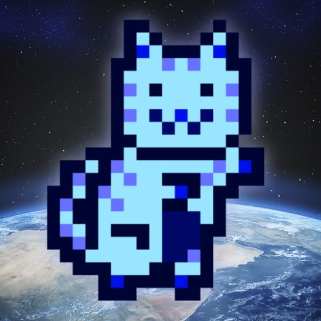
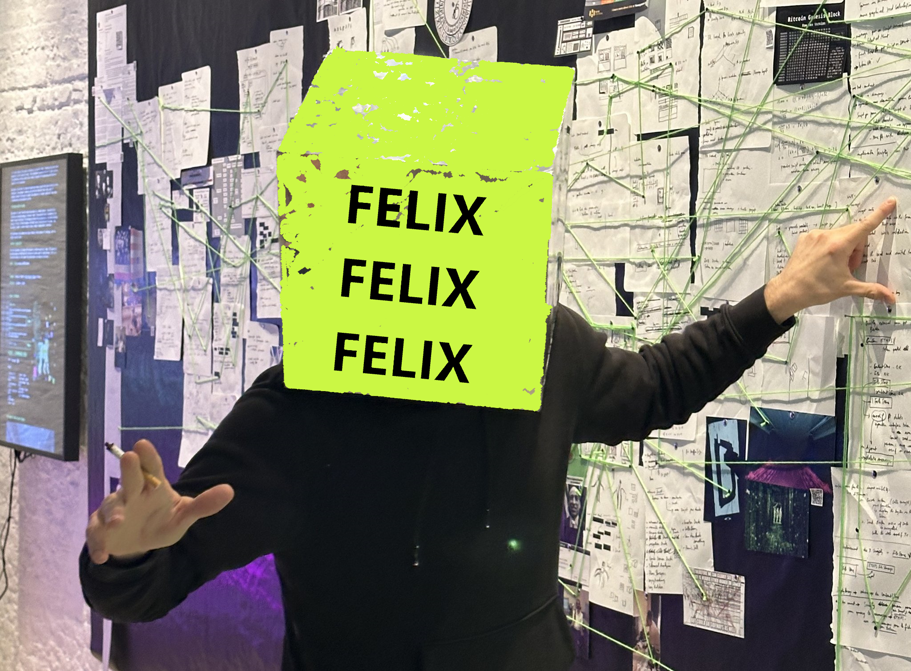
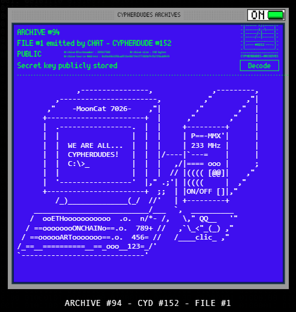
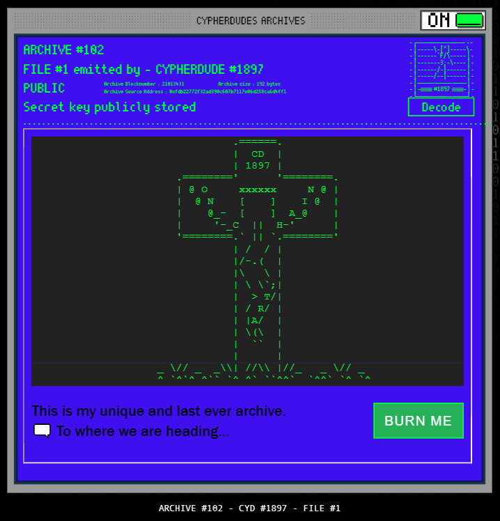
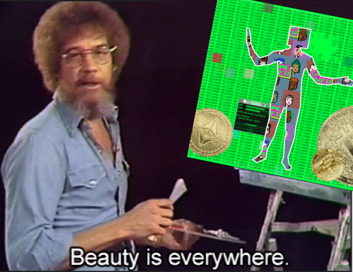

About Me
I'm MoonCat7026: an NFT collector and fully onchain artist, passionate about blockchain and decentralization across tech, finance, and above all, art. We're living through a renaissance of digital art right now. That's a rare thing to witness, and I feel lucky to be here for it.
MoonCat
I select the best projects, the ones that actually did something first. MoonCat is one of them: a pioneer. Minted in August 2017, before the ERC-721 standard even existed, MoonCatRescue is one of the very first NFT collections on Ethereum, years ahead of the boom that made the format famous. 25,600 pixel cats, each one adopted through an onchain rescue mechanism rather than a simple mint. My own name comes from there.

Felix
I discovered felixfelixfelix at NFT Paris and met the best artist out there: someone with a genuinely true artistic universe. His site isn't a portfolio, it's a piece in itself, an interactive gallery you explore as a 2D grid or a rotating 3D cube. Since 2022 his work has moved from glitch and video collage toward generative WebGL and Bitcoin Ordinal inscriptions. Cypherdudes is his flagship series, live since 2024.

Cypherdudes
I discovered Cypherdudes, Felix's flagship project. It lets collectors mint fully onchain NFTs hidden inside the artwork itself, the Cypherdude. A generative cryptoart series paying tribute to the Cypherpunk movement, the same current of thought behind Bitcoin in 2008. 2048 unique dudes, algorithm hosted directly on the blockchain. Each one hides a feature most people never find: an encrypted message any owner can inscribe onto their dude, turning it into a small onchain vault. Launched February 22, 2024 at Avant Galerie Vossen in Paris. Minted out that September.

Archives
The NFTs I create with Cypherdudes are called archives. Their code is stored entirely onchain, exactly like the ones shown here. Every project on this site, OGA³, BRUIT, EGGS, SUPER CYD BROS, CENTRALIAN, DGL, lives inside one of my dudes.


I try to put into words the blockchain's universe, Felix's art, and my own sensibility for digital art, while helping other collectors see what I see. Good visit.
